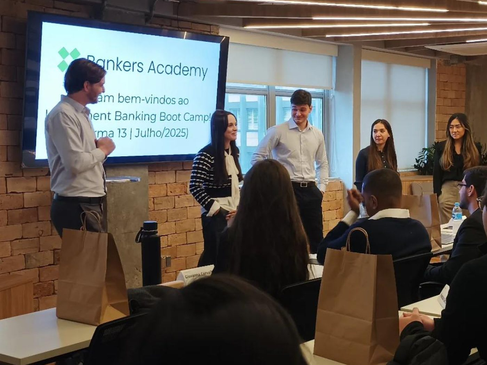

Capa
De cabeça no mercado financeiro
O livro de José Roberto Securato Junior. Um método em seis passos, do autoconhecimento à entrevista, pra quem quer entrar no mercado financeiro.
Abrir o livro6 passos para se tornar um Banker
O livro de José Roberto Securato Junior sobre como entrar no mercado financeiro. Escrito a partir de 14 anos em investment banking e mais de duas décadas em sala de aula, apresenta um método em seis passos — do autoconhecimento à entrevista.
Método em 6 passos 264 páginas Casos reais de carreira
Se isso soa familiar
Não sabe se combina mais com Investment Banking, Sales & Trading ou outra área — e decide baseado em achismo, não em método.
LinkedIn e currículo desorganizados, sem uma narrativa que explique por que alguém deveria te contratar.
Já levou "não" num processo seletivo e ficou sem entender exatamente o que faltou.
Não tem ninguém no setor pra pedir conselho — nem rede, nem mentor, nem um caminho claro dos próximos passos.
O livro existe pra resolver exatamente isso: um método, não um chute. Baixe o capítulo 1 e comece →
/ De cabeça no mercado financeiro
O método tem seis passos, na ordem em que o autor os apresenta. Cada um responde a uma pergunta que trava quem quer entrar no mercado financeiro.
Capa
O livro de José Roberto Securato Junior. Um método em seis passos, do autoconhecimento à entrevista, pra quem quer entrar no mercado financeiro.
Abrir o livro03
Escolher a carreira que combina com o seu perfil.
Ler sobre este passo04
Fechar as lacunas que travam sua entrada no mercado.
Ler sobre este passo05
A narrativa que responde: por que eu deveria contratar você?
Ler sobre este passoAlém do método
Dois capítulos do livro não são passo — e são justamente os que o autor mais responde.
A estrutura de cargos do mercado financeiro, como é um dia na vida de um analista júnior, e as diferenças entre trabalhar no Brasil, no eixo Rio–São Paulo e em Nova Iorque.
Tem espaço para um aluno de Direito no Mercado Financeiro? Depois · quando os seis estão prontosDinâmica em grupo, entrevista individual e o discurso de fechamento. É o capítulo em que o método vira prática — e o que o autor mais responde no livro inteiro.
O que é mais importante, o técnico ou o comportamental?Uma recomendação real
Uma recomendação assinada por um profissional do mercado — e o que escrevem os leitores que compraram o livro.
Uma obra essencial para quem quer entender e prosperar no mercado financeiro.
★★★★★
Livro sensacional e essencial. A leitura é super fluida, a organização impecável e o conteúdo extremamente útil para quem busca uma carreira no Mercado Financeiro. Recomendo!
★★★★★
Essencial para qualquer um que deseja uma carreira no mercado financeiro — principalmente quem quer as áreas mais requisitadas, que exigem alto conhecimento em finanças corporativas.
★★★★★
Descubra os seis passos e desenhe uma jornada profissional que faça sentido para você.
Quero ler o livroOs dois títulos são a mesma imagem, em ordem: primeiro você entra de cabeça, depois você nada de braçada. Um livro é sobre entrar no mercado financeiro. O outro, sobre o que fazer depois.

6 passos para se tornar um Banker
Oficina do Livro · 2024 · 264 páginas
ISBN 978-65-89449-75-1
O método em seis passos, do autoconhecimento à entrevista.
Comprar o livroNadando
de braçada
no mercado
financeiro
José Roberto
Securato Junior
Oficina do Livro
Capa ilustrativa
A continuação
Em breve neste site
Como construir a carreira depois de entrar: evoluir, ganhar estabilidade e liderar no mercado financeiro.

Investment Banking Boot Camp · Turma 13 · julho de 2025
O livro organiza a rota. Na Academy, você transforma o método em repertório técnico, prática e preparação para processos seletivos — com formações on-line e experiências presenciais.
Explorar a Bankers AcademyProgramas Bankers Academy
Do primeiro contato com o mercado financeiro à preparação técnica para processos seletivos.
Entrada no Mercado Financeiro
Uma base técnica e prática completa para entender as carreiras, escolher sua direção e entrar no mercado financeiro.
Entrada em Tesouraria, Sales & Trading
Formação direcionada para compreender a rotina, os instrumentos e as competências exigidas em Tesouraria, Sales & Trading.
Entrada em Startup & Private Equity
Uma jornada para entender investimentos em startups e empresas privadas, da análise da oportunidade à criação de valor.
Introdução à Finanças para não financeiros